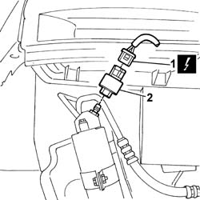

5040B14 air conditioner system multi-level pressure switch - r+r
- Path
- Procedures > 50 AUXILIARY UNITS > 5040 AIR CONDITIONING CASING AND COMPONENTS > 5040B system safety check devices > 5040B14 air conditioner system multi-level pressure switch - r+r
- Kind
- repair procedure (removal / refitting; the operation number is the code)
- Applies to
- all engines; all production periods
- Interactive page
- https://sloeber94.github.io/elrnDB-fDbl/en/#/2584831
Applies to: engines: 1.2 8v, 1.6 16v, 1.3 JTD 16V, 1.9 JTD 8V, 1.9 DIESEL; all production periods
 Removing
Removing
 Refitting
RefittingPlace the car on a ramp.
Op. 5040A10 AIR CONDITIONING REFRIGERANT CIRCUIT - DRYING AND REPRESSURIZING
Disconnect the battery negative terminal.
Op. 7055B54 PROTECTION/GUARD UNDER ENGINE - R.R.
1. Disconnect the electrical connector for the multi-stage pressure switch.
Name | Connector | |
|---|---|---|
1 | 4 stage pressure switch |
2. Undo and remove the multi-stage pressure switch.

Applies to: engines: 1.2 8v, 1.6 16v, 1.3 JTD 16V, 1.9 JTD 8V, 1.9 DIESEL; all production periods
Refitting
RemovingTighten the multi-stage pressure switch in its seating and connect the electrical connector.
 | Name | Connector |
|---|---|---|
- | 4 stage pressure switch |
Op. 7055B54 PROTECTION/GUARD UNDER ENGINE - R.R.
Connect the battery negative terminal.
Op. 5040A10 AIR CONDITIONING REFRIGERANT CIRCUIT - DRYING AND REPRESSURIZING
Remove the vehicle from the ramp.
Applies to: engines: 1.4 8v; production: da 12/03; only with equipment: MY 2005
Removing
RefittingPosition the vehicle on a lift.
- Turn the ignition key to the OFF position.
- Lift the bonnet
Disconnect the negative battery terminal.
Description | Connector | |
|---|---|---|
BATTERY |
Op. 0010T84 COOLANT FOR AIR CONDITIONING SYSTEM - DEHYDRATE AND RECHARGE
Op. 7055B08 GRILLE (ONE) ON FRONT BUMPER - R.R
1. Disconnect the electrical connector for the multi-stage pressure switch.
2. Undo the multi-stage pressure switch and remove it.
Description | Connector | |
|---|---|---|
1 | 4 stage pressure switch |
Applies to: engines: 1.4 8v; production: da 12/03; only with equipment: MY 2005
Refitting
Removing- Check operation of the multilevel pressure switch.
Tighten the multilevel pressure switch in its seat and connect the electrical connector.
Description | Connector | |
|---|---|---|
- | 4 stage pressure switch |
Op. 7055B08 GRILLE (ONE) ON FRONT BUMPER - R.R
Op. 0010T84 COOLANT FOR AIR CONDITIONING SYSTEM - DEHYDRATE AND RECHARGE
Connect the negative battery terminal.
Description | Connector | |
|---|---|---|
BATTERY |
Op. 0010T84 COOLANT FOR AIR CONDITIONING SYSTEM - DEHYDRATE AND RECHARGE
Remove the vehicle from the lift.
Topics linked from this page (8)
- 0010T84 coolant for air conditioning system dehydrate and recharge
- 5040 AIR CONDITIONING CASING AND COMPONENTS
- 5040A10 Air conditioning refrigerant CIRCUIT - Draining and Refilling
- 7055B08 GRILLE (ONE) ON FRONT BUMPER - R.R
- 7055B54 under-engine guard - r r
- 7210E10 R.R. FRONT BUMPER
- A001 BATTERY
- K010 FOUR STAGE PRESSURE SWITCH